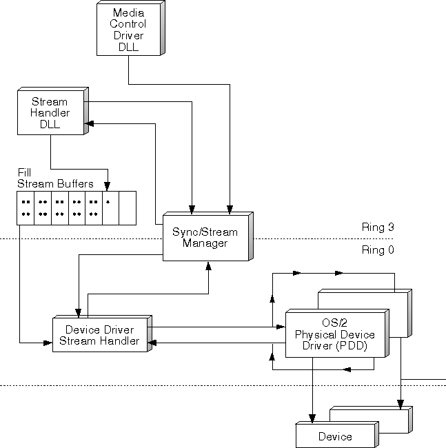

The multimedia system provides stream handlers at both the system kernel level (Ring 0) and the application level (Ring 3). Stream handlers are at Ring 0 and Ring 3 because some streams are ideally controlled by a direct connection between the stream handler and a device's physical device driver (PDD). Other streams are not associated with a data source or target, which maps physically to a specific device. For example, the file system stream handler is a DLL, because all file system input/output (I/O) functions are available as Ring 3 OS/2 functions, and service all file system devices. This eliminates the need to build a specific stream handler device driver for every device the file system can access.
Stream handlers are responsible for controlling the flow of application data, in a continuous, real-time manner. Each handler can establish multiple data stream instances, where each stream involves data of a specific type; for example, MIDI (Musical Instrument Digital Interface) or ADPCM (Adaptive Delta Pulse Code Modulation). The application, through the use of a media control driver, invokes an SPI function to create the stream and another SPI function to activate the data stream. The application does not have to continuously invoke SPI functions to maintain data flow. Instead, the stream handler keeps the I/O continuous, simplifying the operations of the application.